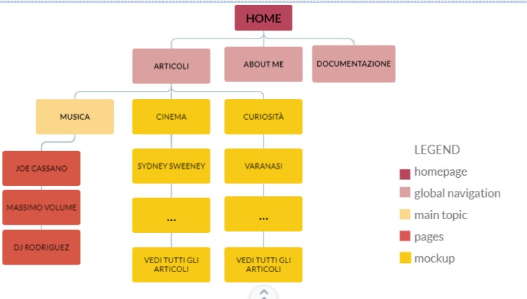
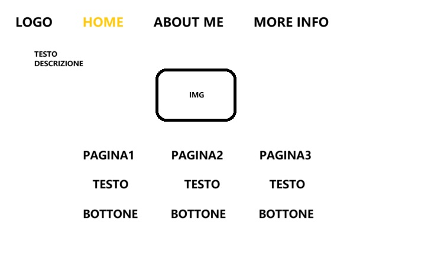
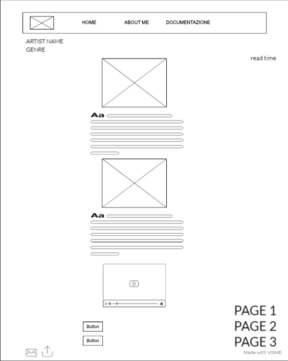
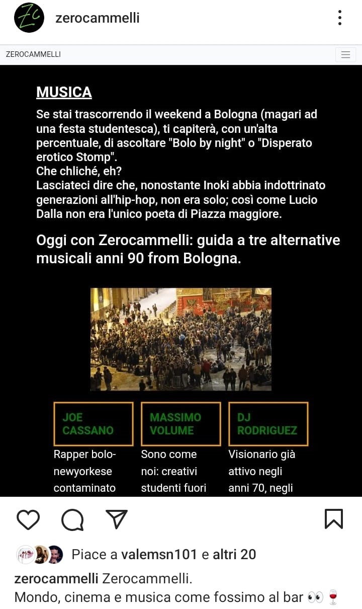
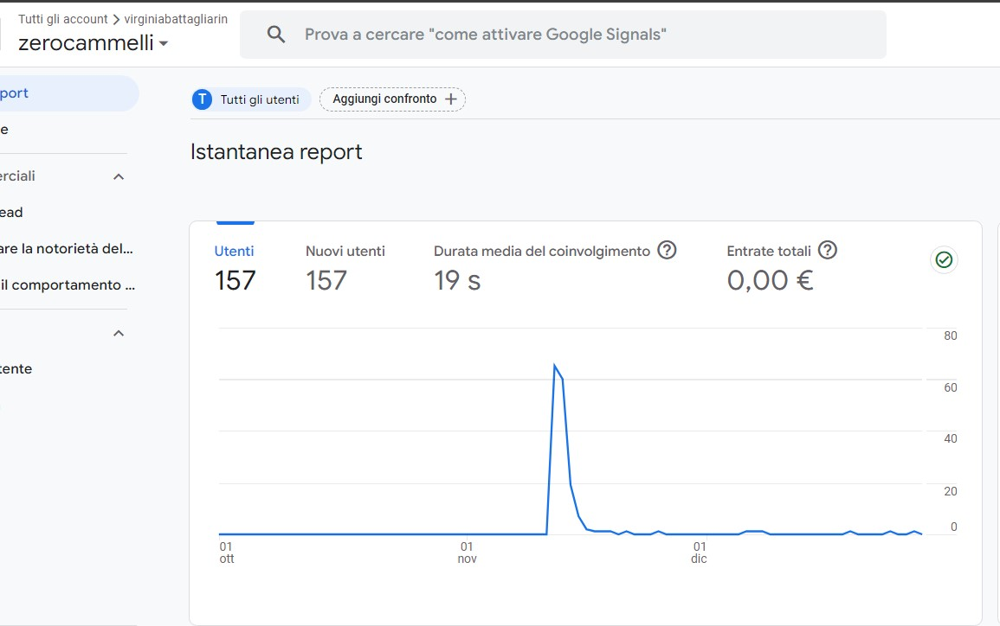

ABSTRACT
Zerocammelli è una rivista online di intrattenimento che propone articoli di musica, cinema e curiosità dal mondo e che esordisce con un articolo di musica. Il sito è pensato principalmente per un pubblico giovane e appassionato degli argomenti trattati. Il focus del sito sono intrattenimento e micro-content ovvero contenuti di infromazione brevi e semplici. L'obiettivo del sito è fornire un intrattenimento rapido ma istruttivo.
PROJECT MANAGMENT PLAN
1. BENCHMARKETING
1.1 obiettivo
Zerocammelli ha lo scopo di creare uno spazio di lettura godevole per il pubblico e informare in modo istantaneo riguardo musica, cinema e curiosità.
1.2 target
Il target è un pubblico di giovani adulti compresti tra i 16 e i 30 anni.
1.3 competitors
I siti magazine più simili sono Billboard, Vibe magazine e Vice. Billboard e Vibe magazine sono interamente dedicati alla musica, e trattano di artisti molto conosciuti, soprattutto americani. Vice Italia gode solo di pubblico italiano, e gli argomenti trattati sono numerosissimi: attualità, cultura, musica, cibo, tecnologia, identità e salute (con varie sottocategorie) risultanto dispersivi.
2. STRUTTURA E LAYOUT
IMMAGINE 1 - ARCHITETTURA DEL SITO CON LEGGENDA PER COMPRENDERE LA DISTRIBUZIONE DEI COLORI
IMMAGINE 2 - HOME WIREFRAME, ORGANIZZAZIONE DEI BLOCCHI INFORMATIVI, QUINDI DEL TESTO E DELLE IMMAGINI E DEI BOTTONI
IMMAGINE 3 - WIREFRAME DELLE PAGINE DEGLI ARTISTI UGUALI PER CHIAREZZA DI DISPOSIZIONE DEI CONTENUTI
2.2 look and feel
Il font scelto è Roboto.
La palette di colori del sito è composta da black, green e solid orange.
3. LINGUAGGI E STRUMENTI
I linguaggi web utilizzati sono HTML e CSS.
Gli strumenti di supporto utilizzati per la progettazione web sono: Bootsrap per la grafica, chatgpt per i codici, We3school per i bottoni, Font Awsome per le icone, Youtube per i link, Wikipedia per alcune ricerche e Visme per la creazione dei wireframe e dell'architettura del sito.
COMMUNICATION STRATEGY
1. BACKGROUND
Quanto è già stato fatto? Quanto è efficace il risultato e perchè?
Cosa manca e perchè non è efficace ciò che esiste?
I siti competitors analizzati sono Billboard, Vibe Magazine, Vice Italia e Oa Plus.
Billboard è una rivista settimanale dedicata interamente alla muscia, mentre Zerocammelli non tratta esclusivamente di musica. Inoltre Billboard, così come Vibe Magazine, dedica il suo spazio ad artisti di fama mondiale, mentre Zerocammelli vorrebbe includere nella propria ricerca anche artisti emergenti o meno conosciuti.
Vice Italia e Oa Plus sono magazine online che propongono articoli di svariato genere. Zerocammelli vorrebbe curare una proposta più selettiva: cinema, musica e curiosità dal mondo.
Vice ha inoltre dichiarato bancarotta nel maggio del 2023.
A mio parere i magazine che trattano tanti temi sono una ottima risorsa di lettura, ma risultano dispersivi se la volontà del lettore è quella di leggere un articolo breve in un momento libero. Avere a disposizione troppa scelta mette in crisi il lettore, che si ritrova perso nell'indecisione e rimane insoddisfatto.
La discriminante di Vibe Magaze è che gli articoli sono pubblicati esclusivamente in inglese, non è quindi adatto per coloro che l'inglese non lo parlano.
2. OBIETTIVI COMUNICATIVI
Quali scelte sono state fatte in questo progetto e quali sono gli obiettivi sottesi alle scelte fatte?
Zerocammelli è uno spazio di informazione accesibile a tutti, offerto al pubblico con un linguaggio semplice e comprensibile. La scelta di ridurre la lunghezza degli articoli al minimo è una tecnica utile a mantenere la concentrazione dell'utente.
3. TARGET, AUDIENCE E MESSAGGIO
1. A chi si rivolge il sito?
Il pubblico di Zerocammelli è composto da studenti e giovani lavoratori che nei mezzi pubblici o tra un impegno e l'altro si dedicano a brevi letture, utenti che vogliono provare a rimpiazzare lo scrolling, che usano i social (TikTok, Instagram e Facebook, WhatsApp).
Il targert secondario sono ragazzi più giovani di 16 anni o altri appassionati di cinema e musica di un'età superiore ai 30 anni. Questi trovano uno spazio inclusivo essendo linguaggio e contenuto comprensibile e non volgare.
2. Quale messaggio trasmette il sito?
L'obiettivo è di arricchire l'utente con alcune curiosità per aumentare la sua autostima poichè il lettore scopre qualcosa di nuovo e lo comprende all'istante.
Il sito è pensato per poter leggere qualcosa rapidamente e portare a termine la lettura.
4. PROMOZIONE
Come intendo promuovere il mio sito?
La promozione del sito è avvenuta online tramite Facebook, Instagram e Whatsapp.
5. VALUTAZIONE DEI RISULTATI
Ho raggiunto gli obiettivi che mi sono prefissata?
Gli obiettivi di comunicazione web scelti sono
1. 20 like ad un post

IMMAGINE 4 - SCREEENSHOT DELLA PAGINA INSTAGRAM DI ZEROCAMMELLI, QUINDI DEL POST PUBBLICATO E DEL RAGGIUGIMENTO DELL'OBIETTIVO DI OTTENERE 20 LIKE
2. 50 visite al sito web da utenti unici

IMMAGINE 5 - SCRRENSHOT DELLA SCHERMATA DI GOOGLE ANALYTICS CHE RIPORTA IL NUMERO DI ACCESSI DA UTENTI UNICI AL SITO ZEROCAMMELLI